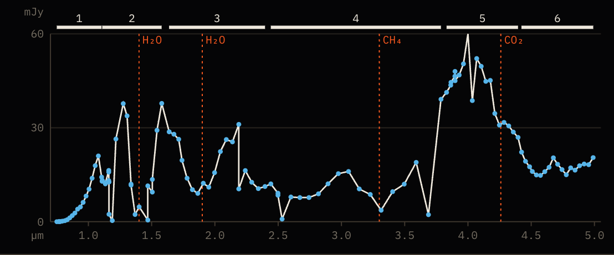

02 · Our answer
Type a name or coordinates. Blink.
- Blink X finds every SPHEREx exposure of that spot and lines them up, north at the top. Every date comes from the image file itself.
- Five ways to compare: blink, swipe, side by side, difference, time-lapse.
- Add exposures together to see things too faint for one exposure.
- Lay ESA Gaia stars over the picture, each moved to the picture's date.
- Works on a phone. Every view is a link, and can be embedded in any website.

3 / 7
03 · It looks for you
Sky Doodles: the tool finds what changed
- It finds the sources in every exposure, checks the alignment on the stars, and links what moved into tracks.
- Each find is one of five doodles: arrow (a nearby star), spark (an asteroid), comet tail, pulse (a brightness change), zigzag (the wobble a distant planet would show).
- An Object Card gives the speed with its error, the direction, and a check against JPL Horizons, IMCCE SkyBoT and SIMBAD.
- Nothing is called a discovery. Unexplained means “candidate”, with the reasons it may be nothing.


4 / 7
05 · Extra
One click: the whole spectrum of any spot
- In one visit a spot crosses all six SPHEREx detectors. Blink X reads about 100 exposures and measures the spot in each: a 0.75–5 µm spectrum in half a minute.
- An object that drifts is followed.
- Light that is not the object's own is drawn hollow. A star that overloads the detector gets a warning, not a reading.
- The numbers download as CSV.


6 / 7